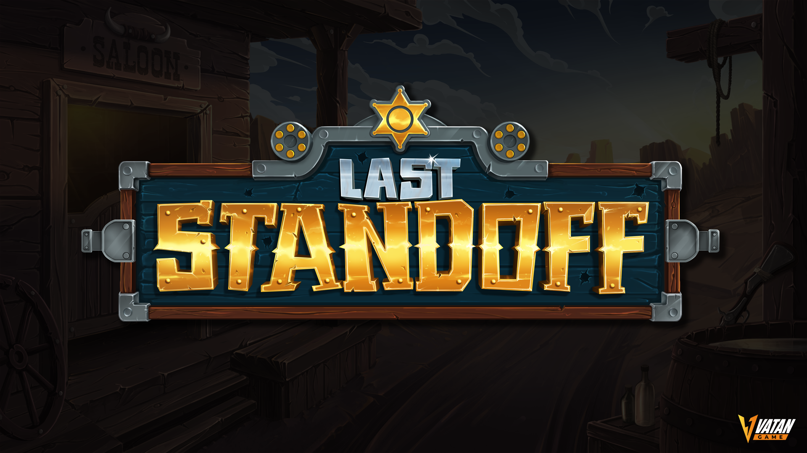
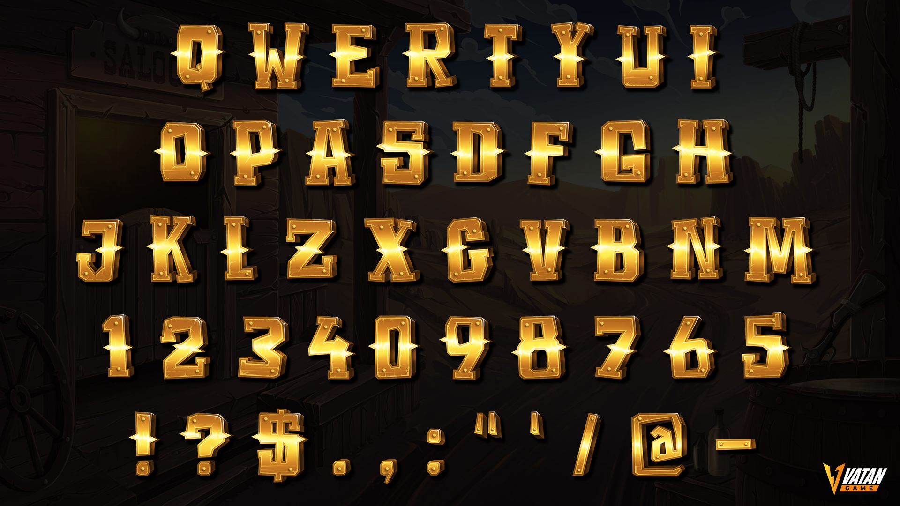
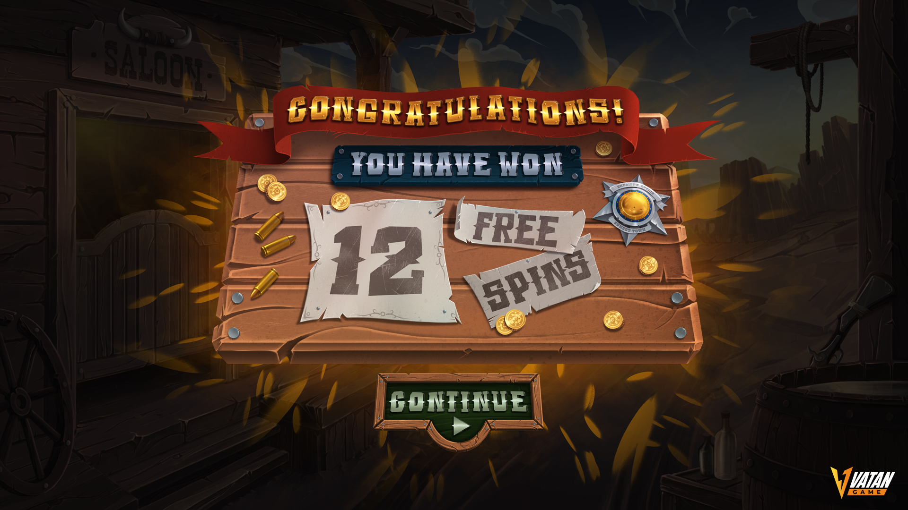

iGaming / Visual Development
Last Standoff
A Western-themed slot visual package spanning environment art, reel design, symbols, logo, UI, lettering and win screens.







iGaming / Visual Development
A Western-themed slot visual package spanning environment art, reel design, symbols, logo, UI, lettering and win screens.


